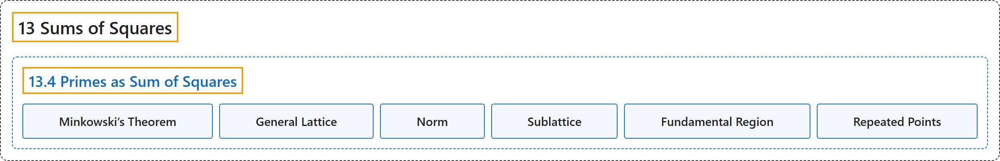

13.4 Primes as Sum of Squares
Classification

Glossary
| Term | Definition | 中文翻译 | Source |
|---|---|---|---|
| 13.4 Primes as Sum of Squares 素数表为平方和 |
"Every prime \(p\) of the form \(4k+1\) can be written as a sum of squares." | 每个形如 \(4k+1\) 的素数 \(p\) 都能写成平方和。 | Crisman, 2024, Theorem 13.4.5 |
| Minkowski’s Theorem 闵可夫斯基定理 |
"We roughly follow [E.2.1, Chapter 10.6], but expanded greatly to avoid any direct reference to Hermann Minkowski’s theorem on lattice points in a convex symmetric set." | 我们大致沿用 [E.2.1, Chapter 10.6]，但作了大幅展开，以避免直接引用赫尔曼闵可夫斯基关于凸对称集中的格点的闵可夫斯基定理。 | Crisman, 2024, Remark 13.4.1 |
| General Lattice 一般的格 |
"Sometimes we call things like the set of blue dots a lattice, though in this text I will usually use the word lattice only to refer to the usual integer lattice of the black dots. A general lattice is something related to a concept from linear algebra – vectors generated by a basis, except instead of being vectors over \(\mathbb{Q}\) or \(\mathbb{R}\), they are over \(\mathbb{Z}\)." | 有时我们把蓝点组成的这类集合称为格，不过本书中我通常只用格这个词指黑点组成的通常的整数格。一般的格与线性代数中的一个概念有关：由一组基生成的向量，只是这些向量不是在 \(\mathbb{Q}\) 或 \(\mathbb{R}\) 上，而是在 \(\mathbb{Z}\) 上。 | Crisman, 2024, Remark 13.4.3 |
| Norm 范数 |
"We call the norm of a point \((x,y)\) the sum of squares, \(N(x,y)=x^2+y^2\)." | 我们把平方和 \(N(x,y)=x^2+y^2\) 称为点 \((x,y)\) 的范数。 | Crisman, 2024, Definition 13.4.4 |
| Sublattice 子格 |
"What we do now is to create a sublattice of the blue dots, which we will color green. (This is just a subset of a lattice which still otherwise satisfies the conditions for being a lattice.)" | 现在我们构造蓝点的一个子格，把它涂成绿色。（这只是格的一个子集，它在其他方面仍满足作为格的条件。） | Crisman, 2024, subsection 13.4.3 |
| Fundamental Region 基本区域 |
"Because all points inside the parallelogram (not just green, blue, or lattice points) will “repeat” outside of it in another parallelogram, \(4p\) is the biggest area of a region that you can have and not “repeat” some point. (This parallelogram is often called a fundamental region in more general treatments.)" | 由于平行四边形内的所有点（不只是绿点、蓝点或格点）都会在它外面的另一个平行四边形中“重复”，\(4p\) 是一个区域在不“重复”任何点的情况下所能有的最大面积。（在更一般的论述中，这个平行四边形常称为基本区域。） | Crisman, 2024, subsection 13.4.4 |
| Repeated Points 重复点 |
"We say that two distinct points \(v,w\) in a plane region are “repeated” if they are both rigid translations of the same point in \(L\), where the allowed translations are those described in Fact 13.4.9." | 若平面区域中两个不同的点 \(v,w\) 都是 \(L\) 中同一个点的刚性平移（允许的平移是事实 13.4.9 所描述的那些），就说它们是“重复”的。 | Crisman, 2024, Definition 13.4.10 |
References
Crisman, K.-D. (2024). Number theory: In context and interactive (June 26, 2024 edition). Gordon College. Retrieved October 29, 2026, from https://math.gordon.edu/ntic/ntic/